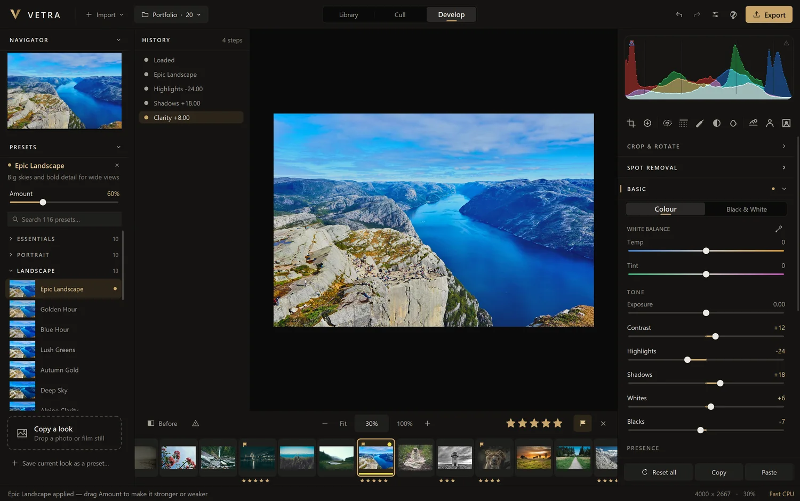

About
A photo editor that minds its own business.
VETRA exists because editing your own photos should not need an account, a subscription or someone else's server.
What it is
VETRA is a photo editor for Windows. It has three rooms: a Library to gather photos, Cull to choose the ones worth keeping, and Develop to make them look right. It opens RAW files and ordinary ones, ships with 116 presets, and includes tools that used to need a cloud service, such as subject masks and depth-based lens blur, running on your own machine.
It is currently a test version: complete enough to use for real work, and still collecting reports from the people who try it.
What it holds to
- Your originals are never changed. Edits are instructions kept beside the photo, not new pixels written over it.
- Your photos stay on your computer. No account, no upload, no usage tracking.
- Nothing is hidden. A preset is slider settings you can read and change. History shows every step.
- A beginner can start, an expert can stay. A guided tour for the first hour; curves, colour grading and masks for the hundredth.
- It asks first. Before downloading anything, before deleting anything.
Roadmap
Where it is going.
Direction, not promises. Nothing here has a date until it ships.
Now, in 7.0-test
- Library, Cull and Develop
- 116 presets and Copy a look
- Eight kinds of mask, AI subject and sky
- Lens blur with a depth map
- Export to several places, backups of edits
Next
- Fixes from this test: your reports decide the order
- A code-signed installer, so Windows no longer warns about it
- The phone companion: browse and edit your library from a phone on your own Wi-Fi, with nothing going through the internet. Built, and held back for this test
Being looked at
- Opening HEIC photos from iPhones
- Suggestions from testers. Add yours
Press kit
Writing about VETRA?
The kit has the logo as PNG and SVG and six full-size screenshots. Use them freely in articles, reviews and videos about VETRA. Please do not alter the logo.
Download the press kit ZIP, 11 MB
In one sentence
VETRA is a free, non-destructive photo editor for Windows with 116 presets, AI masks and lens blur that run entirely on your own computer.
In one paragraph
VETRA is a photo editor for Windows 10 and 11 that keeps both your photos and your edits on your own computer. It opens RAW and JPEG files, never changes the originals, and records every adjustment in a History you can step back through. It includes 116 presets with adjustable strength, Copy a look for matching the colour of any picture, eight kinds of local mask including AI subject and sky selection, and depth-based lens blur. There is no account and no subscription. The current release is the 7.0-test test version.
Facts
- Name: VETRA, written in capitals
- Current version: 7.0-test, released 27 September 2026
- Platform: Windows 10 and 11, 64-bit
- Price: free during testing
- Colours: charcoal
#0b0b0a, champagne gold#c8a46a, paper white#ece8e1
The photographs in the screenshots are sample images from Unsplash contributors, served by Lorem Picsum, and are used under the Unsplash licence.


Get in touch.
Bug reports, questions and ideas all go to the same place: the issue tracker.